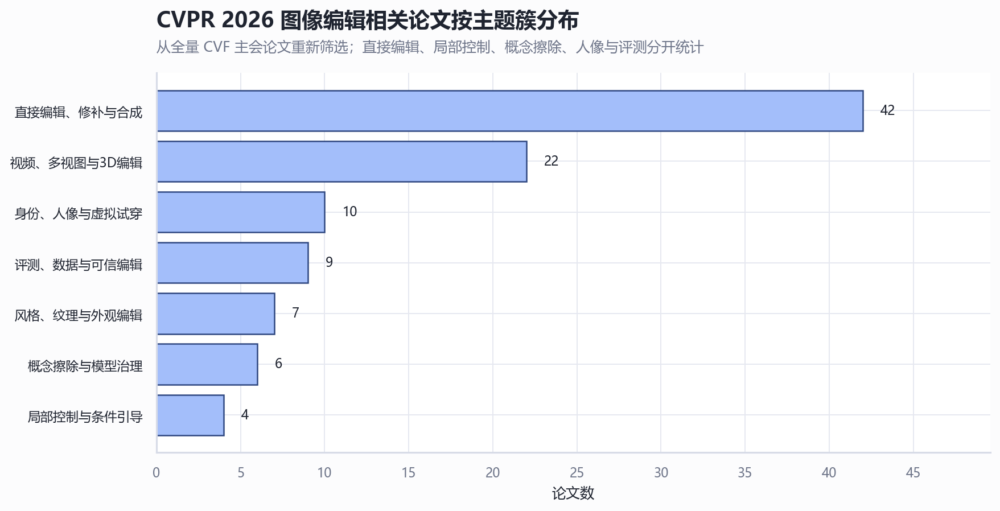
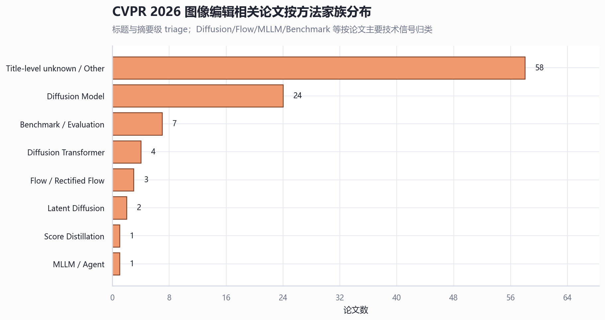
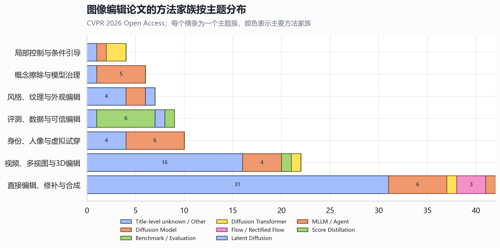
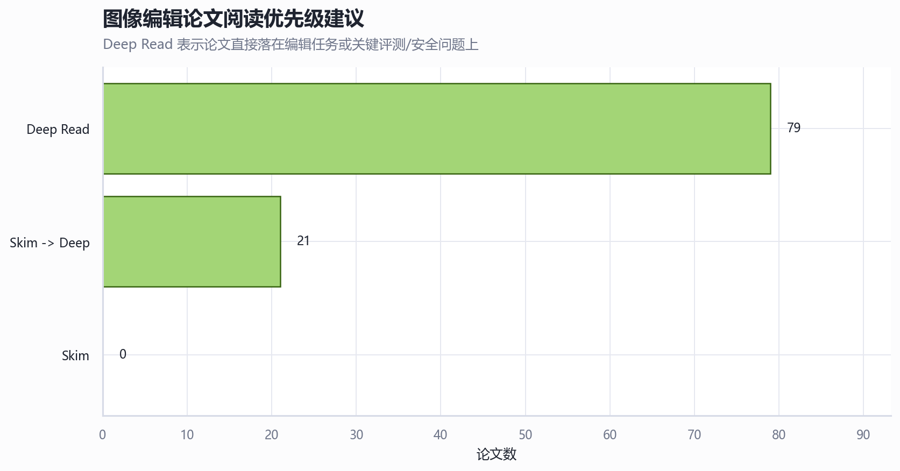

CVPR 2026 图像编辑相关论文统计分析
技术摘要：图像编辑已从单一生成模型分化为编辑任务、控制接口、可信评测三条线
从 4,068 篇 CVPR 2026 主会论文中重新筛出 100 篇图像编辑相关论文，占主会约 2.5%。这批论文不是 diffusion 子集的再过滤；它额外纳入了 instruction-guided image editing、image retouching、benchmark、授权/可信编辑、风格纹理、人像试穿、视频/多视图编辑等标题和摘要明确落在编辑链路上的工作。
主题上最密集的是 直接编辑、修补与合成 42 篇、视频、多视图与3D编辑 22 篇、身份、人像与虚拟试穿 10 篇。这说明 2026 年的 image editing 不只是“生成一张新图”，而是在走向复杂指令、多对象局部约束、编辑安全、身份保持和跨视角一致性。
关键发现：直接编辑最多，但评测/可信编辑是新增的非 diffusion 盲区
按主题簇看，直接编辑、修补、合成仍是最大主体；但从全量 CVF 页面重新筛选后，`CompBench` 与 `RetouchIQ` 这类 benchmark/retouching/agent 论文会进入清单。它们不一定以 diffusion 为标题核心，却对 image edit 研究路线很关键。

方法家族仍由 diffusion 及其变体主导，但 MLLM/Agent、Benchmark/Evaluation、Flow/Rectified Flow 已经形成明显侧枝。对后续研究最有用的不是只追模型，而是对照任务：复杂指令编辑需要 benchmark，人像/试穿需要身份保持，视频/多视图需要一致性。



范围、数据与定义：本报告按 image editing 链路重新筛选
数据源是 CVF Open Access 的 CVPR 2026 主会三天页面。脚本先解析全量标题、作者、CVF 页面、PDF/arXiv 链接，再对标题出现编辑信号的候选论文做 triage；本次有 102 条候选记录保留了本地缓存摘要，作为人工复核备注，不参与最终纳入规则。
本报告的“图像编辑相关”包括 instruction-guided image editing、retouching、inpainting、compositing、concept erasure、regional/local control、style/texture/appearance editing、identity-preserving face/try-on editing、video/multiview/3D editing extension，以及 editing benchmark / authorization / trustworthy editing。
不纳入纯 restoration/enhancement、分割/检测/跟踪/检索、机器人/导航控制等边界任务，除非标题或摘要明确说明其目标是图像编辑操作。被排除但触发关键词的候选保存在 cvpr2026_image_editing_candidates.csv，便于复核。
主题簇统计
| 主题簇 | 论文数 | 占比 |
|---|---|---|
| 直接编辑、修补与合成 | 42 | 42.0% |
| 视频、多视图与3D编辑 | 22 | 22.0% |
| 身份、人像与虚拟试穿 | 10 | 10.0% |
| 评测、数据与可信编辑 | 9 | 9.0% |
| 风格、纹理与外观编辑 | 7 | 7.0% |
| 概念擦除与模型治理 | 6 | 6.0% |
| 局部控制与条件引导 | 4 | 4.0% |
方法家族统计
| 方法家族 | 论文数 | 占比 |
|---|---|---|
| Title-level unknown / Other | 58 | 58.0% |
| Diffusion Model | 24 | 24.0% |
| Benchmark / Evaluation | 7 | 7.0% |
| Diffusion Transformer | 4 | 4.0% |
| Flow / Rectified Flow | 3 | 3.0% |
| Latent Diffusion | 2 | 2.0% |
| MLLM / Agent | 1 | 1.0% |
| Score Distillation | 1 | 1.0% |
模态统计
| 模态 | 论文数 | 占比 |
|---|---|---|
| 图像 | 60 | 60.0% |
| 视频 | 19 | 19.0% |
| 多模态指令 | 9 | 9.0% |
| 人像 / 人体 | 7 | 7.0% |
| 3D / 多视图 | 5 | 5.0% |
阅读优先级统计
| 优先级 | 论文数 | 占比 |
|---|---|---|
| Deep Read | 79 | 79.0% |
| Skim -> Deep | 21 | 21.0% |
方法：全量 CVF 抓取 + 标题/摘要级审计筛选
筛选过程分三步：第一步解析 CVF 主会全量页面，得到 4,068 篇论文；第二步用编辑任务词、局部控制词、风格/身份/视频编辑词建立宽候选；第三步用排除规则剔除 restoration-only、segmentation/detection/tracking/retrieval 等非编辑任务。最终纳入由标题级规则和人工边界规则决定，避免缓存摘要数量变化导致统计漂移。
每篇最终论文都有 relevance、editing_cluster、method_family、reading_priority、signals 和 evidence_basis 字段。这个结果适合做专题地图和阅读队列，但不等价于逐篇 PDF 的完整审稿；后续精读时应优先补充方法细节、实验协议和代码可复现性。
限制与不确定性：标题/摘要足以做地图，不足以替代精读
本报告没有逐篇通读 PDF，因此对方法细节、实验可信度、baseline 公平性和代码可复现性只做低深度判断。最容易出现边界不确定的是 prompt/alignment/control 类论文：它们可能是通用生成控制，也可能是编辑系统中的关键模块；本报告将其降为中相关或 Skim -> Deep，而不是和直接 image editing 混为一类。
另一个不确定点是 low-level enhancement 与 photo editing 的边界。报告排除了白平衡、反射移除、纯 restoration 等缺少编辑意图的论文；如果你的研究口径要覆盖 computational photography editing，可以从候选审计表中重新打开这些边界项。
建议阅读路线：先读任务定义，再读控制与一致性
优先级最高的是复杂指令编辑/修图 benchmark、直接编辑与修补、人像/试穿、概念擦除、多视图/视频编辑。这些论文最容易转化为后续研究问题：如何评测复杂编辑是否满足指令，如何避免局部编辑串扰，如何保持身份/风格/纹理，如何让编辑跨帧和跨视角一致。
直接编辑、修补与合成：32 篇 Deep Read；另有 24 篇
- RetouchIQ: MLLM Agents for Instruction-Based Image Retouching with Generalist Reward
- OrionEdit: Bridging Reference and Source Images for Generalized Cross-Image Editing
- CogniEdit: Dense Gradient Flow Optimization for Fine-Grained Image Editing
- ObjectMorpher: 3D-Aware Image Editing via Deformable 3DGS
- CARE-Edit: Condition-Aware Routing of Experts for Contextual Image Editing
- The Devil is in Attention Sharing: Improving Complex Non-rigid Image Editing Faithfulness via Attention Synergy
- HiFi-Inpaint: Towards High-Fidelity Reference-Based Inpainting for Generating Detail-Preserving Human-Product Images
- InstantRetouch: Efficient and High-Fidelity Instruction-Guided Image Retouching with Bilateral Space
视频、多视图与3D编辑：22 篇 Deep Read；另有 14 篇
- Dynamic-eDiTor: Training-Free Text-Driven 4D Scene Editing with Multimodal Diffusion Transformer
- NOVA: Sparse Control, Dense Synthesis for Pair-Free Video Editing
- EditCtrl: Disentangled Local and Global Control for Real-Time Generative Video Editing
- FlowDirector: Training-Free Flow Steering for Precise Text-to-Video Editing
- HorizonForge: Driving Scene Editing with Any Trajectories and Any Vehicles
- Edit-As-Act: Goal-Regressive Planning for Open-Vocabulary 3D Indoor Scene Editing
- RecEdit-Drive: 3D Reconstruction-Guided Spatiotemporal Video Editing for Autonomous Driving Scenes
- FFP-300K: Scaling First-Frame Propagation for Generalizable Video Editing
身份、人像与虚拟试穿：10 篇 Deep Read；另有 2 篇
- One-to-All Animation: Alignment-Free Character Animation and Image Pose Transfer
- Vanast: Virtual Try-On with Human Image Animation via Synthetic Triplet Supervision
- PG-VTON: Single-Pass Training-Free Virtual Try-On via Patch-Guided Reference Alignment
- Diffusion-Based Makeup Transfer with Facial Region-Aware Makeup Features
- Attribute-Preserving Pseudo-Labeling for Diffusion-Based Face Swapping
- High-Fidelity Diffusion Face Swapping with ID-Constrained Facial Conditioning
- EmoDiffTalk: Emotion-aware Diffusion for Editable 3D Gaussian Talking Head
- FEAT: Fashion Editing and Try-On from Any Design
评测、数据与可信编辑：9 篇 Deep Read；另有 1 篇
- CompBench: Benchmarking Complex Instruction-guided Image Editing
- MotionEdit: Benchmarking and Learning Motion-Centric Image Editing
- Omni IIE Bench: Benchmarking the Practical Capabilities of Image Editing Models
- Unsafe2Safe: Controllable Image Anonymization for Downstream Utility
- I2I-Bench: A Comprehensive Benchmark Suite for Image-to-Image Editing Models
- VisiLock: Authorizing Instruction-based Image editing with Dual Score Distillation
- Forensic-Friendly Image Manipulation via Controllable Latent Diffusion
- WiseEdit: Benchmarking Cognition- and Creativity-Informed Image Editing
概念擦除与模型治理：6 篇 Deep Read
- Erasing Thousands of Concepts: Towards Scalable and Practical Concept Erasure for Text-to-Image Diffusion Models
- GenErase: Generalizable and Semantically-Aware Concept Erasure in Diffusion Models
- Prototype-Guided Concept Erasure in Diffusion Models
- Neighbor-Aware Localized Concept Erasure in Text-to-Image Diffusion Models
- Beyond Text Prompts: Precise Concept Erasure through Text-Image Collaboration
- GrOCE : Graph-Guided Online Concept Erasure for Text-to-Image Diffusion Models
进一步问题
- 复杂指令编辑 benchmark 是否真的覆盖多对象、多约束、多步编辑，还是仍偏向单句局部替换？
- 概念擦除论文能否抵抗同义提示、LoRA/adapter 恢复和邻近概念副作用？
- 区域编辑方法是否显式度量了 non-target preservation，而不只是展示少量定性图？
- 多视图/视频编辑能否同时保持几何一致性、时间一致性和局部可控性？
- 哪些论文有代码、数据和可复现实验，适合作为后续 image editing 项目的 baseline？
全量图像编辑相关论文清单
CSV 版本可继续筛选和二次标注：cvpr2026_image_editing_papers.csv；候选审计表：cvpr2026_image_editing_candidates.csv。
| ID | 日期 | 标题 | 作者 | 主题簇 | 方法家族 | 相关度 | 优先级 | 最佳用途 | 链接 |
|---|---|---|---|---|---|---|---|---|---|
| 33 | 2026-06-05 | The Consistency Critic: Correcting Inconsistencies in Generated Images via Reference-Guided Attentive Alignment | Ziheng Ouyang, Yiren Song, Yaoli Liu et al. | 局部控制与条件引导 | Title-level unknown / Other | 中相关 | Skim -> Deep | 作为区域编辑/提示控制模块阅读，重点看控制粒度与跨对象干扰。 | CVF PDF arXiv |
| 302 | 2026-06-05 | Layer-wise Instance Binding for Regional and Occlusion Control in Text-to-Image Diffusion Transformers | Ruidong Chen, Yancheng Bai, Xuanpu Zhang et al. | 局部控制与条件引导 | Diffusion Transformer | 中相关 | Skim -> Deep | 作为区域编辑/提示控制模块阅读，重点看控制粒度与跨对象干扰。 | CVF PDF arXiv |
| 1205 | 2026-06-05 | DiffDecompose: Layer-Wise Decomposition of Alpha-Composited Images via Diffusion Transformers | Zitong Wang, Hang Zhao, Qianyu Zhou et al. | 局部控制与条件引导 | Diffusion Transformer | 中相关 | Skim -> Deep | 作为区域编辑/提示控制模块阅读，重点看控制粒度与跨对象干扰。 | CVF PDF arXiv |
| 2412 | 2026-06-06 | Your Latent Mask is Wrong: Pixel-Equivalent Latent Compositing for Diffusion Models | Rowan Bradbury, Dazhi Zhong | 局部控制与条件引导 | Diffusion Model | 中相关 | Skim -> Deep | 作为区域编辑/提示控制模块阅读，重点看控制粒度与跨对象干扰。 | CVF PDF arXiv |
| 13 | 2026-06-05 | Erasing Thousands of Concepts: Towards Scalable and Practical Concept Erasure for Text-to-Image Diffusion Models | Hoigi Seo, Byung Hyun Lee, Jaehyun Cho et al. | 概念擦除与模型治理 | Diffusion Model | 强相关 | Deep Read | 作为安全编辑、模型治理与概念删除基线，重点看泛化、绕过与遗忘副作用。 | CVF PDF arXiv |
| 535 | 2026-06-05 | GenErase: Generalizable and Semantically-Aware Concept Erasure in Diffusion Models | Korada Sri Vardhana, Soma Biswas | 概念擦除与模型治理 | Diffusion Model | 强相关 | Deep Read | 作为安全编辑、模型治理与概念删除基线，重点看泛化、绕过与遗忘副作用。 | CVF PDF |
| 1873 | 2026-06-06 | Prototype-Guided Concept Erasure in Diffusion Models | Yuze Cai, Jiahao Lu, Hongxiang Shi et al. | 概念擦除与模型治理 | Diffusion Model | 强相关 | Deep Read | 作为安全编辑、模型治理与概念删除基线，重点看泛化、绕过与遗忘副作用。 | CVF PDF arXiv |
| 2512 | 2026-06-06 | Neighbor-Aware Localized Concept Erasure in Text-to-Image Diffusion Models | Zhuan Shi, Alireza Dehghanpour Farashah, Rik de Vries et al. | 概念擦除与模型治理 | Diffusion Model | 强相关 | Deep Read | 作为安全编辑、模型治理与概念删除基线，重点看泛化、绕过与遗忘副作用。 | CVF PDF arXiv |
| 2687 | 2026-06-07 | Beyond Text Prompts: Precise Concept Erasure through Text-Image Collaboration | Jun Li, Lizhi Xiong, Ziqiang Li et al. | 概念擦除与模型治理 | Title-level unknown / Other | 强相关 | Deep Read | 作为安全编辑、模型治理与概念删除基线，重点看泛化、绕过与遗忘副作用。 | CVF PDF arXiv |
| 3939 | 2026-06-07 | GrOCE : Graph-Guided Online Concept Erasure for Text-to-Image Diffusion Models | Ning Han, Zhenyu Ge, Feng Han et al. | 概念擦除与模型治理 | Diffusion Model | 强相关 | Deep Read | 作为安全编辑、模型治理与概念删除基线，重点看泛化、绕过与遗忘副作用。 | CVF PDF |
| 17 | 2026-06-05 | RetouchIQ: MLLM Agents for Instruction-Based Image Retouching with Generalist Reward | Qiucheng Wu, Jing Shi, Simon Jenni et al. | 直接编辑、修补与合成 | MLLM / Agent | 强相关 | Deep Read | 作为图像编辑主线方法精读，重点看编辑保真度、局部不串扰和推理步数。 | CVF PDF arXiv |
| 290 | 2026-06-05 | OrionEdit: Bridging Reference and Source Images for Generalized Cross-Image Editing | Zeyu Jiang, Lai Man Po, Xuyuan Xu et al. | 直接编辑、修补与合成 | Title-level unknown / Other | 强相关 | Deep Read | 作为图像编辑主线方法精读，重点看编辑保真度、局部不串扰和推理步数。 | CVF PDF |
| 319 | 2026-06-05 | CogniEdit: Dense Gradient Flow Optimization for Fine-Grained Image Editing | Yan Li, Lin Liu, Xiaopeng Zhang et al. | 直接编辑、修补与合成 | Title-level unknown / Other | 强相关 | Deep Read | 作为图像编辑主线方法精读，重点看编辑保真度、局部不串扰和推理步数。 | CVF PDF arXiv |
| 532 | 2026-06-05 | ObjectMorpher: 3D-Aware Image Editing via Deformable 3DGS | Yuhuan Xie, Aoxuan Pan, Yi-Hua Huang et al. | 直接编辑、修补与合成 | Title-level unknown / Other | 强相关 | Deep Read | 作为图像编辑主线方法精读，重点看编辑保真度、局部不串扰和推理步数。 | CVF PDF arXiv |
| 575 | 2026-06-05 | CARE-Edit: Condition-Aware Routing of Experts for Contextual Image Editing | Yucheng Wang, Zedong Wang, Yuetong Wu et al. | 直接编辑、修补与合成 | Title-level unknown / Other | 强相关 | Deep Read | 作为图像编辑主线方法精读，重点看编辑保真度、局部不串扰和推理步数。 | CVF PDF arXiv |
| 676 | 2026-06-05 | The Devil is in Attention Sharing: Improving Complex Non-rigid Image Editing Faithfulness via Attention Synergy | Zhuo Chen, Fanyue Wei, Runze Xu et al. | 直接编辑、修补与合成 | Title-level unknown / Other | 强相关 | Deep Read | 作为图像编辑主线方法精读，重点看编辑保真度、局部不串扰和推理步数。 | CVF PDF arXiv |
| 897 | 2026-06-05 | HiFi-Inpaint: Towards High-Fidelity Reference-Based Inpainting for Generating Detail-Preserving Human-Product Images | Yichen Liu, Donghao Zhou, Jie Wang et al. | 直接编辑、修补与合成 | Title-level unknown / Other | 强相关 | Deep Read | 作为图像编辑主线方法精读，重点看编辑保真度、局部不串扰和推理步数。 | CVF PDF arXiv |
| 1103 | 2026-06-05 | InstantRetouch: Efficient and High-Fidelity Instruction-Guided Image Retouching with Bilateral Space | Jiarui Wu, Yujin Wang, Ruikang Li et al. | 直接编辑、修补与合成 | Title-level unknown / Other | 强相关 | Deep Read | 作为图像编辑主线方法精读，重点看编辑保真度、局部不串扰和推理步数。 | CVF PDF |
| 1371 | 2026-06-06 | FlowDC: Flow-Based Decoupling-Decay for Complex Image Editing | Yilei Jiang, Zhen Wang, Yanghao Wang et al. | 直接编辑、修补与合成 | Flow / Rectified Flow | 强相关 | Deep Read | 作为图像编辑主线方法精读，重点看编辑保真度、局部不串扰和推理步数。 | CVF PDF arXiv |
| 1409 | 2026-06-06 | Delta Rectified Flow Sampling for Text-to-Image Editing | Gaspard Beaudouin, Minghan Li, Jaeyeon Kim et al. | 直接编辑、修补与合成 | Flow / Rectified Flow | 强相关 | Deep Read | 作为图像编辑主线方法精读，重点看编辑保真度、局部不串扰和推理步数。 | CVF PDF arXiv |
| 1529 | 2026-06-06 | From Inpainting to Layer Decomposition: Repurposing Generative Inpainting Models for Image Layer Decomposition | Jingxi Chen, Yixiao Zhang, Xiaoye Qian et al. | 直接编辑、修补与合成 | Title-level unknown / Other | 强相关 | Deep Read | 作为图像编辑主线方法精读，重点看编辑保真度、局部不串扰和推理步数。 | CVF PDF arXiv |
| 1612 | 2026-06-06 | SliderEdit: Continuous Image Editing with Fine-Grained Instruction Control | Arman Zarei, Samyadeep Basu, Mobina Pournemat et al. | 直接编辑、修补与合成 | Title-level unknown / Other | 强相关 | Deep Read | 作为图像编辑主线方法精读，重点看编辑保真度、局部不串扰和推理步数。 | CVF PDF arXiv |
| 1929 | 2026-06-06 | MagicQuill V2: Precise and Interactive Image Editing with Layered Visual Cues | Zichen Liu, Yue Yu, Hao Ouyang et al. | 直接编辑、修补与合成 | Title-level unknown / Other | 强相关 | Deep Read | 作为图像编辑主线方法精读，重点看编辑保真度、局部不串扰和推理步数。 | CVF PDF |
| 2072 | 2026-06-06 | VINS-120K: Ultra High-Resolution Image Editing with A Large-Scale Dataset | Zhizhou Chen, Shanyan Guan, Zhanxin Gao et al. | 直接编辑、修补与合成 | Title-level unknown / Other | 强相关 | Deep Read | 作为图像编辑主线方法精读，重点看编辑保真度、局部不串扰和推理步数。 | CVF PDF |
| 2203 | 2026-06-06 | ChordEdit: One-Step Low-Energy Transport for Image Editing | Liangsi Lu, Xuhang Chen, Minzhe Guo et al. | 直接编辑、修补与合成 | Title-level unknown / Other | 强相关 | Deep Read | 作为图像编辑主线方法精读，重点看编辑保真度、局部不串扰和推理步数。 | CVF PDF arXiv |
| 2309 | 2026-06-06 | BiFM: Bidirectional Flow Matching for Few-Step Image Editing and Generation | Yasong Dai, Zeeshan Hayder, David Ahmedt-Aristizabal et al. | 直接编辑、修补与合成 | Flow / Rectified Flow | 强相关 | Deep Read | 作为图像编辑主线方法精读，重点看编辑保真度、局部不串扰和推理步数。 | CVF PDF |
| 2497 | 2026-06-06 | InverFill: One-Step Inversion for Enhanced Few-Step Diffusion Inpainting | Duc Vu, Kien Nguyen, Trong-Tung Nguyen et al. | 直接编辑、修补与合成 | Diffusion Model | 强相关 | Deep Read | 作为图像编辑主线方法精读，重点看编辑保真度、局部不串扰和推理步数。 | CVF PDF arXiv |
| 2518 | 2026-06-06 | ReasonEdit: Towards Reasoning-Enhanced Image Editing Models | Fukun Yin, Shiyu Liu, Yucheng Han et al. | 直接编辑、修补与合成 | Title-level unknown / Other | 强相关 | Deep Read | 作为图像编辑主线方法精读，重点看编辑保真度、局部不串扰和推理步数。 | CVF PDF arXiv |
| 2550 | 2026-06-06 | From Scale to Speed: Adaptive Test-Time Scaling for Image Editing | Xiangyan Qu, Zhenlong Yuan, Jing Tang et al. | 直接编辑、修补与合成 | Title-level unknown / Other | 强相关 | Deep Read | 作为图像编辑主线方法精读，重点看编辑保真度、局部不串扰和推理步数。 | CVF PDF arXiv |
| 2560 | 2026-06-06 | NEAF: Natural Image Editing with Attention Fusion for Generalizable Test-time Optimization in Text-Guided Image Editing | Jisoo Kim, Heeseok Oh | 直接编辑、修补与合成 | Title-level unknown / Other | 强相关 | Deep Read | 作为图像编辑主线方法精读，重点看编辑保真度、局部不串扰和推理步数。 | CVF PDF |
| 2683 | 2026-06-07 | Kontinuous Kontext: Continuous Strength Control for Instruction-based Image Editing | Rishubh Parihar, Or Patashnik, Daniil Ostashev et al. | 直接编辑、修补与合成 | Title-level unknown / Other | 强相关 | Deep Read | 作为图像编辑主线方法精读，重点看编辑保真度、局部不串扰和推理步数。 | CVF PDF arXiv |
| 2820 | 2026-06-07 | HP-Edit: A Human-Preference Post-Training Framework for Image Editing | Fan Li, Chonghuinan Wang, Lina Lei et al. | 直接编辑、修补与合成 | Title-level unknown / Other | 强相关 | Deep Read | 作为图像编辑主线方法精读，重点看编辑保真度、局部不串扰和推理步数。 | CVF PDF arXiv |
| 2842 | 2026-06-07 | FlashIn: Fast and Accurate Image Inversion for Real-time Image Editing | Guangzhi Wang | 直接编辑、修补与合成 | Title-level unknown / Other | 强相关 | Deep Read | 作为图像编辑主线方法精读，重点看编辑保真度、局部不串扰和推理步数。 | CVF PDF |
| 2847 | 2026-06-07 | Leveraging Verifier-Based Reinforcement Learning in Image Editing | Hanzhong Guo, Jie Wu, Jie Liu et al. | 直接编辑、修补与合成 | Title-level unknown / Other | 强相关 | Deep Read | 作为图像编辑主线方法精读，重点看编辑保真度、局部不串扰和推理步数。 | CVF PDF arXiv |
| 2897 | 2026-06-07 | UniEdit-I: Training-free Image Editing for Unified VLM via Iterative Understanding, Editing and Verifying | Chengyu Bai, Jintao Chen, Xiang Bai et al. | 直接编辑、修补与合成 | Title-level unknown / Other | 强相关 | Deep Read | 作为图像编辑主线方法精读，重点看编辑保真度、局部不串扰和推理步数。 | CVF PDF arXiv |
| 3306 | 2026-06-07 | Pico-Banana-400K: A Large-Scale Dataset for Text-Guided Image Editing | Yusu Qian, Eli Bocek-Rivele, Liangchen Song et al. | 直接编辑、修补与合成 | Title-level unknown / Other | 强相关 | Deep Read | 作为图像编辑主线方法精读，重点看编辑保真度、局部不串扰和推理步数。 | CVF PDF |
| 3628 | 2026-06-07 | Edit2Perceive: Image Editing Diffusion Models Are Strong Dense Perceivers | Yiqing Shi, Yiren Song, Mike Zheng Shou | 直接编辑、修补与合成 | Diffusion Model | 强相关 | Deep Read | 作为图像编辑主线方法精读，重点看编辑保真度、局部不串扰和推理步数。 | CVF PDF arXiv |
| 3760 | 2026-06-07 | EasyOmnimatte: Taming Pretrained Inpainting Diffusion Models for End-to-End Video Layered Decompositio | Yihan Hu, Xuelin Chen, Xiaodong Cun | 直接编辑、修补与合成 | Diffusion Model | 强相关 | Deep Read | 作为图像编辑主线方法精读，重点看编辑保真度、局部不串扰和推理步数。 | CVF PDF |
| 3929 | 2026-06-07 | FreqEdit: Preserving High-Frequency Features for Robust Multi-Turn Image Editing | Yucheng Liao, Jiajun Liang, Kaiqian Cui et al. | 直接编辑、修补与合成 | Title-level unknown / Other | 强相关 | Deep Read | 作为图像编辑主线方法精读，重点看编辑保真度、局部不串扰和推理步数。 | CVF PDF arXiv |
| 3972 | 2026-06-07 | Meta-CoT: Enhancing Granularity and Generalization in Image Editing | Shiyi Zhang, Yiji Cheng, Tiankai Hang et al. | 直接编辑、修补与合成 | Title-level unknown / Other | 强相关 | Deep Read | 作为图像编辑主线方法精读，重点看编辑保真度、局部不串扰和推理步数。 | CVF PDF arXiv |
| 4056 | 2026-06-07 | Towards Robust Sequential Decomposition for Complex Image Editing | Zilai Zeng, Mingdeng Cao, Zijie Li et al. | 直接编辑、修补与合成 | Title-level unknown / Other | 强相关 | Deep Read | 作为图像编辑主线方法精读，重点看编辑保真度、局部不串扰和推理步数。 | CVF PDF arXiv |
| 4068 | 2026-06-07 | EditMGT: Unleashing Potentials of Masked Generative Transformers in Image Editing | Wei Chow, Linfeng Li, Lingdong Kong et al. | 直接编辑、修补与合成 | Title-level unknown / Other | 强相关 | Deep Read | 作为图像编辑主线方法精读，重点看编辑保真度、局部不串扰和推理步数。 | CVF PDF arXiv |
| 524 | 2026-06-05 | Re-Align: Structured Reasoning-guided Alignment for In-Context Image Generation and Editing | Runze He, Yiji Cheng, Tiankai Hang et al. | 直接编辑、修补与合成 | Title-level unknown / Other | 中相关 | Skim -> Deep | 作为图像编辑主线方法精读，重点看编辑保真度、局部不串扰和推理步数。 | CVF PDF arXiv |
| 756 | 2026-06-05 | CREval: An Automated Interpretable Evaluation for Creative Image Manipulation under Complex Instructions | Chonghuinan Wang, Zihan Chen, Yuxiang Wei et al. | 直接编辑、修补与合成 | Title-level unknown / Other | 中相关 | Skim -> Deep | 作为图像编辑主线方法精读，重点看编辑保真度、局部不串扰和推理步数。 | CVF PDF arXiv |
| 1165 | 2026-06-05 | UniDef: Universal Defense Against Unauthorized Image Manipulation | Mingwen Shao, Lingzhuang Meng, Xiang Lv et al. | 直接编辑、修补与合成 | Title-level unknown / Other | 中相关 | Skim -> Deep | 作为图像编辑主线方法精读，重点看编辑保真度、局部不串扰和推理步数。 | CVF PDF |
| 1903 | 2026-06-06 | All-in-One Slider for Attribute Manipulation in Diffusion Models | Weixin Ye, Hongguang Zhu, Wei Wang et al. | 直接编辑、修补与合成 | Diffusion Model | 中相关 | Skim -> Deep | 作为图像编辑主线方法精读，重点看编辑保真度、局部不串扰和推理步数。 | CVF PDF arXiv |
| 2111 | 2026-06-06 | Audio-sync Video Instance Editing with Granularity-Aware Mask Refiner | Haojie Zheng, Shuchen Weng, Jingqi Liu et al. | 直接编辑、修补与合成 | Title-level unknown / Other | 中相关 | Skim -> Deep | 作为图像编辑主线方法精读，重点看编辑保真度、局部不串扰和推理步数。 | CVF PDF arXiv |
| 2470 | 2026-06-06 | SpotEdit: Selective Region Editing in Diffusion Transformers | Zhibin Qin, Zhenxiong Tan, Zeqing Wang et al. | 直接编辑、修补与合成 | Diffusion Transformer | 中相关 | Skim -> Deep | 作为图像编辑主线方法精读，重点看编辑保真度、局部不串扰和推理步数。 | CVF PDF arXiv |
| 2680 | 2026-06-07 | Masked Region Transformer for Layered Image Generation and Editing at Scale | Zhicong Tang, Jingye Chen, Zhao Zhang et al. | 直接编辑、修补与合成 | Title-level unknown / Other | 中相关 | Skim -> Deep | 作为图像编辑主线方法精读，重点看编辑保真度、局部不串扰和推理步数。 | CVF PDF |
| 2944 | 2026-06-07 | ShapeAR: Generating Editable Shape Layers via Autoregressive Diffusion | Souymodip Chakraborty, Ankur Singh, Amit Vikram Singh et al. | 直接编辑、修补与合成 | Diffusion Model | 中相关 | Skim -> Deep | 作为图像编辑主线方法精读，重点看编辑保真度、局部不串扰和推理步数。 | CVF PDF |
| 3116 | 2026-06-07 | 3D Space as a Scratchpad for Editable Text-to-Image Generation | Oindrila Saha, Vojtech Krs, Radomir Mech et al. | 直接编辑、修补与合成 | Title-level unknown / Other | 中相关 | Skim -> Deep | 作为图像编辑主线方法精读，重点看编辑保真度、局部不串扰和推理步数。 | CVF PDF arXiv |
| 3351 | 2026-06-07 | HierEdit: Region-Aware Hierarchical Diffusion for Efficient High-Resolution Editing | Yuyao Zhang, Alexander Huang-Menders, Yu-Wing Tai | 直接编辑、修补与合成 | Diffusion Model | 中相关 | Skim -> Deep | 作为图像编辑主线方法精读，重点看编辑保真度、局部不串扰和推理步数。 | CVF PDF |
| 640 | 2026-06-05 | Dynamic-eDiTor: Training-Free Text-Driven 4D Scene Editing with Multimodal Diffusion Transformer | Dong In Lee, Hyungjun Doh, Seunggeun Chi et al. | 视频、多视图与3D编辑 | Diffusion Transformer | 强相关 | Deep Read | 作为从单图编辑扩展到视频、多视图和3D场景的一致性方向阅读。 | CVF PDF arXiv |
| 754 | 2026-06-05 | NOVA: Sparse Control, Dense Synthesis for Pair-Free Video Editing | Tianlin Pan, Jiayi Dai, Chenpu Yuan et al. | 视频、多视图与3D编辑 | Title-level unknown / Other | 强相关 | Deep Read | 作为从单图编辑扩展到视频、多视图和3D场景的一致性方向阅读。 | CVF PDF arXiv |
| 1011 | 2026-06-05 | EditCtrl: Disentangled Local and Global Control for Real-Time Generative Video Editing | Yehonathan Litman, Shikun Liu, Dario Seyb et al. | 视频、多视图与3D编辑 | Title-level unknown / Other | 强相关 | Deep Read | 作为从单图编辑扩展到视频、多视图和3D场景的一致性方向阅读。 | CVF PDF arXiv |
| 1315 | 2026-06-05 | FlowDirector: Training-Free Flow Steering for Precise Text-to-Video Editing | Guangzhao Li, Yanming Yang, Chenxi Song et al. | 视频、多视图与3D编辑 | Title-level unknown / Other | 强相关 | Deep Read | 作为从单图编辑扩展到视频、多视图和3D场景的一致性方向阅读。 | CVF PDF arXiv |
| 1466 | 2026-06-06 | HorizonForge: Driving Scene Editing with Any Trajectories and Any Vehicles | Yifan Wang, Francesco Pittaluga, Zaid Tasneem et al. | 视频、多视图与3D编辑 | Title-level unknown / Other | 强相关 | Deep Read | 作为从单图编辑扩展到视频、多视图和3D场景的一致性方向阅读。 | CVF PDF arXiv |
| 1647 | 2026-06-06 | Edit-As-Act: Goal-Regressive Planning for Open-Vocabulary 3D Indoor Scene Editing | Seongrae Noh, SeungWon Seo, Gyeong-Moon Park et al. | 视频、多视图与3D编辑 | Title-level unknown / Other | 强相关 | Deep Read | 作为从单图编辑扩展到视频、多视图和3D场景的一致性方向阅读。 | CVF PDF arXiv |
| 1684 | 2026-06-06 | RecEdit-Drive: 3D Reconstruction-Guided Spatiotemporal Video Editing for Autonomous Driving Scenes | Yipeng Wu, Xin Wang, Chenghan Yang et al. | 视频、多视图与3D编辑 | Title-level unknown / Other | 强相关 | Deep Read | 作为从单图编辑扩展到视频、多视图和3D场景的一致性方向阅读。 | CVF PDF |
| 1767 | 2026-06-06 | FFP-300K: Scaling First-Frame Propagation for Generalizable Video Editing | Xijie Huang, Chengming Xu, Donghao Luo et al. | 视频、多视图与3D编辑 | Title-level unknown / Other | 强相关 | Deep Read | 作为从单图编辑扩展到视频、多视图和3D场景的一致性方向阅读。 | CVF PDF arXiv |
| 1950 | 2026-06-06 | EgoEdit: Dataset, Real-Time Streaming Model, and Benchmark for Egocentric Video Editing | Runjia Li, Moayed Haji-Ali, Ashkan Mirzaei et al. | 视频、多视图与3D编辑 | Benchmark / Evaluation | 强相关 | Deep Read | 作为从单图编辑扩展到视频、多视图和3D场景的一致性方向阅读。 | CVF PDF |
| 2493 | 2026-06-06 | VDFE: Difference-Aware 3D Scene Editing with Non-Intrusive Video Diffusion Priors for Multi-View Consistency and Efficiency | Chao Zhang, Fang Liu, Shuo Li et al. | 视频、多视图与3D编辑 | Diffusion Model | 强相关 | Deep Read | 作为从单图编辑扩展到视频、多视图和3D场景的一致性方向阅读。 | CVF PDF |
| 2531 | 2026-06-06 | V-RGBX: Video Editing with Accurate Controls over Intrinsic Properties | Ye Fang, Tong Wu, Valentin Deschaintre et al. | 视频、多视图与3D编辑 | Title-level unknown / Other | 强相关 | Deep Read | 作为从单图编辑扩展到视频、多视图和3D场景的一致性方向阅读。 | CVF PDF arXiv |
| 2636 | 2026-06-06 | PerformRecast: Expression and Head Pose Disentanglement for Portrait Video Editing | Jiadong Liang, Bojun Xiong, Jie Tian et al. | 视频、多视图与3D编辑 | Title-level unknown / Other | 强相关 | Deep Read | 作为从单图编辑扩展到视频、多视图和3D场景的一致性方向阅读。 | CVF PDF arXiv |
| 2664 | 2026-06-07 | Catalyst4D: High-Fidelity 3D-to-4D Scene Editing via Dynamic Propagation | Shifeng Chen, Yihui Li, Jun Liao et al. | 视频、多视图与3D编辑 | Title-level unknown / Other | 强相关 | Deep Read | 作为从单图编辑扩展到视频、多视图和3D场景的一致性方向阅读。 | CVF PDF arXiv |
| 2808 | 2026-06-07 | VideoCoF: Unified Video Editing with Temporal Reasoner | Xiangpeng Yang, Ji Xie, Yiyuan Yang et al. | 视频、多视图与3D编辑 | Title-level unknown / Other | 强相关 | Deep Read | 作为从单图编辑扩展到视频、多视图和3D场景的一致性方向阅读。 | CVF PDF arXiv |
| 3353 | 2026-06-07 | Scaling Instruction-Based Video Editing with a High-Quality Synthetic Dataset | Qingyan Bai, Qiuyu Wang, Hao Ouyang et al. | 视频、多视图与3D编辑 | Title-level unknown / Other | 强相关 | Deep Read | 作为从单图编辑扩展到视频、多视图和3D场景的一致性方向阅读。 | CVF PDF arXiv |
| 3550 | 2026-06-07 | Accelerating Diffusion-based Video Editing via Heterogeneous Caching: Beyond Full Computing at Sampled Denoising Timestep | Tianyi Liu, Ye Lu, Linfeng Zhang et al. | 视频、多视图与3D编辑 | Diffusion Model | 强相关 | Deep Read | 作为从单图编辑扩展到视频、多视图和3D场景的一致性方向阅读。 | CVF PDF arXiv |
| 3600 | 2026-06-07 | Coupled Diffusion Sampling for Training-Free Multi-View Image Editing | Hadi Alzayer, Yunzhi Zhang, Chen Geng et al. | 视频、多视图与3D编辑 | Diffusion Model | 强相关 | Deep Read | 作为从单图编辑扩展到视频、多视图和3D场景的一致性方向阅读。 | CVF PDF arXiv |
| 3774 | 2026-06-07 | EasyV2V: A High-quality Instruction-based Video Editing Framework | Jinjie Mai, Chaoyang Wang, Gordon Guocheng Qian et al. | 视频、多视图与3D编辑 | Title-level unknown / Other | 强相关 | Deep Read | 作为从单图编辑扩展到视频、多视图和3D场景的一致性方向阅读。 | CVF PDF arXiv |
| 3973 | 2026-06-07 | AutoCut: End-to-end advertisement video editing based on multimodal discretization and controllable generation | Milton Zhou, Sizhong Qin, Yongzhi Li et al. | 视频、多视图与3D编辑 | Title-level unknown / Other | 强相关 | Deep Read | 作为从单图编辑扩展到视频、多视图和3D场景的一致性方向阅读。 | CVF PDF arXiv |
| 3990 | 2026-06-07 | VIVA: VLM-Guided Instruction-Based Video Editing with Reward Optimization | Xiaoyan Cong, Haotian Yang, Angtian Wang et al. | 视频、多视图与3D编辑 | Title-level unknown / Other | 强相关 | Deep Read | 作为从单图编辑扩展到视频、多视图和3D场景的一致性方向阅读。 | CVF PDF arXiv |
| 4051 | 2026-06-07 | RFDM: Residual Flow Diffusion Models for Video Editing | Mohammadreza Salehi, Mehdi Noroozi, Luca Morreale et al. | 视频、多视图与3D编辑 | Diffusion Model | 强相关 | Deep Read | 作为从单图编辑扩展到视频、多视图和3D场景的一致性方向阅读。 | CVF PDF |
| 4062 | 2026-06-07 | CoT-Edit: Let CoT Guide Instruction Video Editing | Sen Liang, Fengbin Guan, Youliang Zhang et al. | 视频、多视图与3D编辑 | Title-level unknown / Other | 强相关 | Deep Read | 作为从单图编辑扩展到视频、多视图和3D场景的一致性方向阅读。 | CVF PDF |
| 2 | 2026-06-05 | CompBench: Benchmarking Complex Instruction-guided Image Editing | Bohan Jia, Wenxuan Huang, Yuntian Tang et al. | 评测、数据与可信编辑 | Benchmark / Evaluation | 强相关 | Deep Read | 作为评测、授权、可信编辑和产品化约束阅读，适合指导后续benchmark设计。 | CVF PDF arXiv |
| 205 | 2026-06-05 | MotionEdit: Benchmarking and Learning Motion-Centric Image Editing | Yixin Wan, Lei Ke, Wenhao Yu et al. | 评测、数据与可信编辑 | Benchmark / Evaluation | 强相关 | Deep Read | 作为评测、授权、可信编辑和产品化约束阅读，适合指导后续benchmark设计。 | CVF PDF arXiv |
| 258 | 2026-06-05 | Omni IIE Bench: Benchmarking the Practical Capabilities of Image Editing Models | Yujia Yang, Yuanxiang Wang, Zhenyu Guan et al. | 评测、数据与可信编辑 | Benchmark / Evaluation | 强相关 | Deep Read | 作为评测、授权、可信编辑和产品化约束阅读，适合指导后续benchmark设计。 | CVF PDF arXiv |
| 460 | 2026-06-05 | Unsafe2Safe: Controllable Image Anonymization for Downstream Utility | Minh Dinh, SouYoung Jin | 评测、数据与可信编辑 | Title-level unknown / Other | 强相关 | Deep Read | 作为评测、授权、可信编辑和产品化约束阅读，适合指导后续benchmark设计。 | CVF PDF arXiv |
| 2489 | 2026-06-06 | I2I-Bench: A Comprehensive Benchmark Suite for Image-to-Image Editing Models | Juntong Wang, Jiarui Wang, Huiyu Duan et al. | 评测、数据与可信编辑 | Benchmark / Evaluation | 强相关 | Deep Read | 作为评测、授权、可信编辑和产品化约束阅读，适合指导后续benchmark设计。 | CVF PDF arXiv |
| 2561 | 2026-06-06 | VisiLock: Authorizing Instruction-based Image editing with Dual Score Distillation | Van Thanh Le, Yun Fu | 评测、数据与可信编辑 | Score Distillation | 强相关 | Deep Read | 作为评测、授权、可信编辑和产品化约束阅读，适合指导后续benchmark设计。 | CVF PDF |
| 3138 | 2026-06-07 | Forensic-Friendly Image Manipulation via Controllable Latent Diffusion | Hanyu Chen, Haiwei Wu, Jinyu Tian et al. | 评测、数据与可信编辑 | Latent Diffusion | 强相关 | Deep Read | 作为评测、授权、可信编辑和产品化约束阅读，适合指导后续benchmark设计。 | CVF PDF |
| 3427 | 2026-06-07 | WiseEdit: Benchmarking Cognition- and Creativity-Informed Image Editing | Kaihang Pan, Weile Chen, Haiyi Qiu et al. | 评测、数据与可信编辑 | Benchmark / Evaluation | 强相关 | Deep Read | 作为评测、授权、可信编辑和产品化约束阅读，适合指导后续benchmark设计。 | CVF PDF arXiv |
| 3970 | 2026-06-07 | Inter-Edit: First Benchmark for Interactive Instruction-Based Image Editing | Delong Liu, Haotian Hou, Zhaohui Hou et al. | 评测、数据与可信编辑 | Benchmark / Evaluation | 强相关 | Deep Read | 作为评测、授权、可信编辑和产品化约束阅读，适合指导后续benchmark设计。 | CVF PDF |
| 464 | 2026-06-05 | One-to-All Animation: Alignment-Free Character Animation and Image Pose Transfer | Shijun Shi, Jing Xu, Zhihang Li et al. | 身份、人像与虚拟试穿 | Title-level unknown / Other | 强相关 | Deep Read | 作为人像、身份保持、虚拟试穿方向阅读，重点看身份/属性解耦和数据协议。 | CVF PDF arXiv |
| 948 | 2026-06-05 | Vanast: Virtual Try-On with Human Image Animation via Synthetic Triplet Supervision | Hyunsoo Cha, Wonjung Woo, Byungjun Kim et al. | 身份、人像与虚拟试穿 | Title-level unknown / Other | 强相关 | Deep Read | 作为人像、身份保持、虚拟试穿方向阅读，重点看身份/属性解耦和数据协议。 | CVF PDF arXiv |
| 1044 | 2026-06-05 | PG-VTON: Single-Pass Training-Free Virtual Try-On via Patch-Guided Reference Alignment | Guohao Zhao, Yuxin Peng | 身份、人像与虚拟试穿 | Title-level unknown / Other | 强相关 | Deep Read | 作为人像、身份保持、虚拟试穿方向阅读，重点看身份/属性解耦和数据协议。 | CVF PDF |
| 1230 | 2026-06-05 | Diffusion-Based Makeup Transfer with Facial Region-Aware Makeup Features | Zheng Gao, Debin Meng, Yunqi Miao et al. | 身份、人像与虚拟试穿 | Diffusion Model | 强相关 | Deep Read | 作为人像、身份保持、虚拟试穿方向阅读，重点看身份/属性解耦和数据协议。 | CVF PDF arXiv |
| 1449 | 2026-06-06 | Attribute-Preserving Pseudo-Labeling for Diffusion-Based Face Swapping | Jiwon Kang, Yeji Choi, JoungBin Lee et al. | 身份、人像与虚拟试穿 | Diffusion Model | 强相关 | Deep Read | 作为人像、身份保持、虚拟试穿方向阅读，重点看身份/属性解耦和数据协议。 | CVF PDF arXiv |
| 2223 | 2026-06-06 | High-Fidelity Diffusion Face Swapping with ID-Constrained Facial Conditioning | Dailan He, Xiahong Wang, Shulun Wang et al. | 身份、人像与虚拟试穿 | Diffusion Model | 强相关 | Deep Read | 作为人像、身份保持、虚拟试穿方向阅读，重点看身份/属性解耦和数据协议。 | CVF PDF arXiv |
| 2365 | 2026-06-06 | EmoDiffTalk: Emotion-aware Diffusion for Editable 3D Gaussian Talking Head | Chang Liu, Tianjiao Jing, Chengcheng Ma et al. | 身份、人像与虚拟试穿 | Diffusion Model | 强相关 | Deep Read | 作为人像、身份保持、虚拟试穿方向阅读，重点看身份/属性解耦和数据协议。 | CVF PDF |
| 2403 | 2026-06-06 | FEAT: Fashion Editing and Try-On from Any Design | Soye Kwon, Keonyoung Lee, Dahuin Jung et al. | 身份、人像与虚拟试穿 | Title-level unknown / Other | 强相关 | Deep Read | 作为人像、身份保持、虚拟试穿方向阅读，重点看身份/属性解耦和数据协议。 | CVF PDF arXiv |
| 2795 | 2026-06-07 | PLACID: Identity-Preserving Multi-Object Compositing via Video Diffusion with Synthetic Trajectories | Gemma Canet Tarrés, Manel Baradad, Francesc Moreno-Noguer et al. | 身份、人像与虚拟试穿 | Diffusion Model | 强相关 | Deep Read | 作为人像、身份保持、虚拟试穿方向阅读，重点看身份/属性解耦和数据协议。 | CVF PDF |
| 4044 | 2026-06-07 | High-Fidelity Virtual Try-On beyond Paired Data Scarcity via Diffusion-based Cycle-Consistent Learning | Jia Wu, Yijing Dai, Tingfeng Cao et al. | 身份、人像与虚拟试穿 | Diffusion Model | 强相关 | Deep Read | 作为人像、身份保持、虚拟试穿方向阅读，重点看身份/属性解耦和数据协议。 | CVF PDF |
| 781 | 2026-06-05 | Style-GRPO: Semantic-Aware Preference Optimization for Image Style Transfer Guided by Reward Modeling | Jianbin Zhao, Chaoran Feng, Miao Yu et al. | 风格、纹理与外观编辑 | Title-level unknown / Other | 中相关 | Skim -> Deep | 作为外观迁移、风格/纹理素材生成模块阅读，重点看语义与纹理一致性。 | CVF PDF |
| 1379 | 2026-06-06 | NaTex: Seamless Texture Generation as Latent Color Diffusion | Zeqiang Lai, Yunfei Zhao, Zibo Zhao et al. | 风格、纹理与外观编辑 | Diffusion Model | 中相关 | Skim -> Deep | 作为外观迁移、风格/纹理素材生成模块阅读，重点看语义与纹理一致性。 | CVF PDF arXiv |
| 2209 | 2026-06-06 | NI-Tex: Non-isometric Image-based Garment Texture Generation | Hui Shan, Ming Li, Haitao Yang et al. | 风格、纹理与外观编辑 | Title-level unknown / Other | 中相关 | Skim -> Deep | 作为外观迁移、风格/纹理素材生成模块阅读，重点看语义与纹理一致性。 | CVF PDF arXiv |
| 2807 | 2026-06-07 | Harmonic Canvas: Inversion-Free Editing for Visually-Guided Music Style Transfer | Yue Lei, Siqi Yang, Ting Zhong et al. | 风格、纹理与外观编辑 | Title-level unknown / Other | 中相关 | Skim -> Deep | 作为外观迁移、风格/纹理素材生成模块阅读，重点看语义与纹理一致性。 | CVF PDF |
| 2852 | 2026-06-07 | Semantics Lead the Way: Harmonizing Semantic and Texture Modeling with Asynchronous Latent Diffusion | Yueming Pan, Ruoyu Feng, Qi Dai et al. | 风格、纹理与外观编辑 | Latent Diffusion | 中相关 | Skim -> Deep | 作为外观迁移、风格/纹理素材生成模块阅读，重点看语义与纹理一致性。 | CVF PDF arXiv |
| 3041 | 2026-06-07 | StyleGallery: Training-free and Semantic-aware Personalized Style Transfer from Arbitrary Image References | Boyu He, Yunfan Ye, Chang Liu et al. | 风格、纹理与外观编辑 | Title-level unknown / Other | 中相关 | Skim -> Deep | 作为外观迁移、风格/纹理素材生成模块阅读，重点看语义与纹理一致性。 | CVF PDF arXiv |
| 3811 | 2026-06-07 | RegionRoute: Regional Style Transfer with Diffusion Model | Bowen Chen, Jake Zuena, Alan C. Bovik et al. | 风格、纹理与外观编辑 | Diffusion Model | 中相关 | Skim -> Deep | 作为外观迁移、风格/纹理素材生成模块阅读，重点看语义与纹理一致性。 | CVF PDF arXiv |